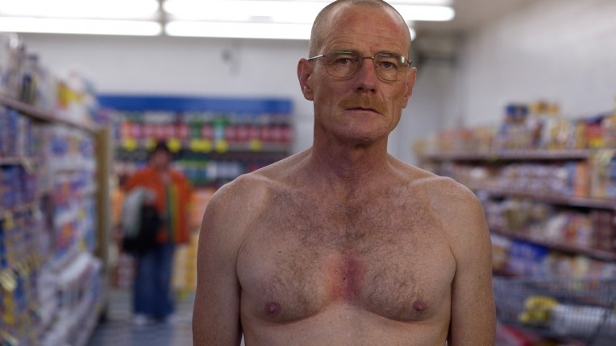
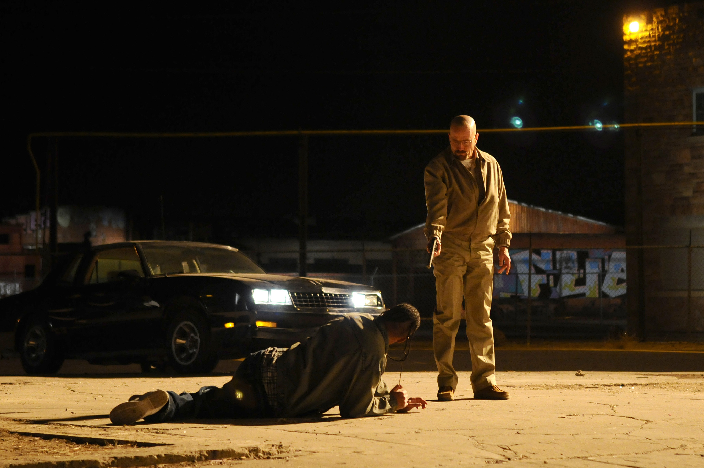

Breaking Bad Edition
An episodic breakdown of the entire Breaking Bad series, the best TV show on the planet
Season One
20 January 2021
Breaking Bad S1E1: Pilot
Join us for our first episode as we explore the first escapade of our favourite duo, Walter White and Jesse Pinkman.
Listen
20 January 2021
Breaking Bad S1E2: Cat's in the Bag...
What makes this episode of Breaking Bad one of the most iconic follow-on episodes of all time? Join us and find out!
Listen
27 January 2021
Breaking Bad S1E3: ...And the Bag's in the River
This time, we discuss the ethical dilemma that Walt must tackle. Will he kill Krazy-8? Or let him free?
Listen
27 January 2021
Breaking Bad S1E4: Cancer Man
Though lacking in drug-related violence, this episode is all about the humanity that exists within our favourite duo.
Listen
03 February 2021
Breaking Bad S1E5: Gray Matter
How will Walt pay for his cancer treatment? By cooking meth! (No, not by accepting money from the wealthy company that he co-founded.)
Listen
03 February 2021
Breaking Bad S1E6: Crazy Handful of Nothin'
We're back to cooking meth but Walt and Jesse need to sell their product. How will the duo deal with Krazy-8's successor, the even crazier Tuco?
Listen
10 February 2021
Breaking Bad S1E7: A No-Rough-Stuff-Type Deal
Even though this episode doesn't feel like a season finale, it's a big change from the pilot. Walt is now a true drug dealer.
Listen
Season Two

10 February 2021
Breaking Bad S2E1: Cancer Man
An explosive start for the new season, Walt's criminal dealings come a little bit too close to home. How will the duo deal with the crazy Tuco?
Listen
17 February 2021
Breaking Bad S2E2: Grilled
Our duo has been kidnapped by Tuco who intends to bring them to Mexico. Will they be able to poison him with the ricin in time?
Listen

17 February 2021
Breaking Bad S2E3: Bit by a Dead Bee
With Hank killing Tuco, how will Walt and Jesse get out of the predicament of last episode? Through two very ingenious plots!
Listen
24 February 2021
Breaking Bad S2E4: Down
As much of the title of the episode suggests, this is one of the lowest points for our characters, especially Jesse. How will they get out of this rut?
Listen
24 February 2021
Breaking Bad S2E5: Breakage
With no one taking place of Tuco as the local drug kingpin, Walt and Jesse create their own army of dealers to distribute their characteristic blue crystal.
Listen
03 March 2021
Breaking Bad S2E6: Peekaboo
This episode dives deep into the harsh reality of drug addicts, all while maintaining the unique Breaking Bad ambience.
Listen
03 March 2021
Breaking Bad S2E7: Negro y Azul
While Walt and Jesse expand their operations in Albuquerque, Hank begins his new work on the border. It is not how he expects it to be.
Listen
10 March 2021
Breaking Bad S2E8: Better Call Saul
Finally, we reach the introduction of one of our favourite characters, the highly corrupt and truly cynical lawyer, Saul Goodman.
Listen
10 March 2021
Breaking Bad S2E9: 4 Days Out
A favourite of ours, this episode sees our duo almost kill themselves out in the barren desert of New Mexico for almost no reason at all.
Listen
17 March 2021
Breaking Bad S2E10: Over
In this episode, Walt momentarily claims to have decided to stop cooking meth. But for him, cooking is as addictive as the drug itself.
Listen
17 March 2021
Breaking Bad S2E11: Mandala
Finally, we are introduced to the most iconic methamphetamine-dealing villain ever: Gus Fring. But will he buy Walt and Jesse's blue crystal?
Listen
24 March 2021
Breaking Bad S2E12: Phoenix
Walt refuses to give Jesse his money, leading him to contend with the ruthless Jane. This will lead him to one of the most difficult decisions of his life.
Listen
24 March 2021
Breaking Bad S2E13: ABQ
We end Season Two with as little resolution as we started. Skyler threatens divorce and one of the worst air disasters in history occurs over Walt's home.
Listen
Season Three
31 March 2021
Breaking Bad S3E1: No Más
The pilgrimage of the vengeful and perhaps psychopathic Salamanca twins begins with a trek from Mexico to the United States.
Listen
31 March 2021
Breaking Bad S3E2: Caballo sin Nombre
Despite the rising tensions between Walt and Skyler, the secret of Walt's life remains confidential almost to everyone, except the murderous cartel.
Listen
07 April 2021
Breaking Bad S3E3: I.F.T.
Walter connivingly calls Skyler's bluff, increasing tension in the White residence. The Salamanca twins are temporarily abated by the drug lord, Gus Fring.
Listen
07 April 2021
Breaking Bad S3E4: Green Light
So far, this season has been building up to Walt's re-entrance into the drug scene. The careful grooming by the people around him culminates in this episode.
Listen
14 April 2021
Breaking Bad S3E5: Más
Walt is finally persuaded by the cunning Gus Fring to return to cooking meth. "Three million dollars for three months of your time."
Listen
14 April 2021
Breaking Bad S3E6: Sunset
Walt and Jesse are brought back together by the relentless Hank, leading to a very tense scene in a nostalgic 1986 Fleetwood Bounder.
Listen
21 April 2021
Breaking Bad S3E7: One Minute
All eyes are on Hank as he loses his job to his violent action against Jesse. Then, when all seems to be on the recovery, the Salamanca twins get their revenge.
Listen
21 April 2021
Breaking Bad S3E8: I See You
While Hank is treated for his injuries, one of the surviving twins poses a loose end to Gus. This must be swiftly dealt with.
Listen
28 April 2021
Breaking Bad S3E9: Kafkaesque
Walt and Jessee are into the swing of things and are on track to earn their $3 million. Yet, Jesse remains unsatisfied.
Listen
28 April 2021
Breaking Bad S3E10: Fly
While nothing seems to happen in this delusional episode, the philosophy of Breaking Bad is explored, namely fatalism, cosmicism and existentialism.
Listen
08 May 2021
Breaking Bad S3E11: Abiquiu
Just as the relationship between Walt and Gus begins to flourish, Jesse finds out that the latter's criminal organisation was responsible for the murder of Combo.
Listen

08 May 2021
Breaking Bad S3E12: Half Measures
Jesse sees red but his anger is abated by a tense intervention. Yet, when Tomás is murdered, Walt takes matters into his own hands.
Listen
19 May 2021
Breaking Bad S3E13: Full Measure
Tensions between Walt and Gus become hostile and our duo are forced to make an irredeemable and unforgivable decision.
Listen
Season Four
16 February 2022
Breaking Bad S4E1: Box Cutter
Walt and Jesse pay for their irredeemable decision by having to witness a brutal and unexpected box cutter murder.
Listen
16 February 2022
Breaking Bad S4E2: Thirty-Eight Snub
This slow-burn episode sees the tragic influences of events on our characters, including the psychological impact of murder on our duo.
Listen
24 February 2022
Breaking Bad S4E3: Open House
Skyler adopts a criminal persona, hatching a plan to buy Bogdan's carwash to launder cash. Meanwhile, tensions rise in the Schrader house.
Listen
24 February 2022
Breaking Bad S4E4: Bullet Points
As Walt and Skyler reveal their fake gambling story to the world, Jesse struggles with his mental trauma, attracting the attention of the callous Gus Fring.
Listen
02 March 2022
Breaking Bad S4E5: Shotgun
Jesse turns out to be safe, being brought out on an errand with Mike. Meanwhile, Walt and Skyler close their deal on their carwash.
Listen
02 March 2022
Breaking Bad S4E6: Cornered
Due to more lies, tensions rise again between Walt and Skyler. Jesse is groomed for his new role, threatening Walt's position in the business.
Listen
10 March 2022
Breaking Bad S4E7: Problem Dog
Walt decides to take action against Gus while Jesse carthatically unloads his thoughts at an NA session in a very iconic scene.
Listen
10 March 2022
Breaking Bad S4E8: Hermanos
Tensions rise between Walt and Jesse as Jesse's loyalty is questioned. The tragic backstory of Gus Frint and Los Pollos Hermans is revealed.
Listen
16 March 2022
Breaking Bad S4E9: Bug
The pressure on Gus increase as Hank's investigation closes in and the cartel violently force their demands in New Mexico.
Listen
16 March 2022
Breaking Bad S4E10: Salud
While Ted Beneke's issues threaten Skyler's plans, Gus swiftly and gracefully takes revenge on the cartel in Mexico.
Listen
24 March 2022
Breaking Bad S4E11: Crawl Space
As Skyler deals with the Ted Beneke predicament, the world collapses around Walt as Gus Fring threatens him and his family.
Listen
24 March 2022
Breaking Bad S4E12: End Times
The end is nigh. Walt's entire life is under threat. His only plan and solution to save himself and his family is to kill his nemesis: Gus Fring.
Listen
31 March 2022
Breaking Bad S4E13: Face Off
In this epic season finale, the cat-and-mouse game between Walt and Gus comes to a glorious and satsifying conclusion.
Listen
Season Five
31 March 2022
Breaking Bad S5E1: Live Free or Die
Even though Walt has won against the almost unkillable Gus Fring, he still has other problems to deal with, this time in the form of a laptop.
Listen
06 April 2022
Breaking Bad S5E2: Madrigal
Breaking Bad goes international as we see the far-reaching implications of Gus Fring's former meth operation.
Listen
06 April 2022
Breaking Bad S5E3: Hazard Pay
Walt and Jesse revamp their meth-cooking, this time by cleverely using pest removal services as a guise. Trouble brews as Gus's former men threaten to confess.
Listen
20 April 2022
Breaking Bad S5E4: Fifty-One
This episode, we begin to see Walt descend into megalomania a whole year after he began his meth-cooking endeavour.
Listen
20 April 2022
Breaking Bad S5E5: Dead Freight
This iconic episode sees one of TV's greatest train heists as Walt, Jesse and Mike are forced to deal with their methylamine storage.
Listen
27 April 2022
Breaking Bad S5E6: Buyout
Walt's true colours show as he refuses to sell the methylamine in light of Jesse and Mike's desires to leave the meth business.
Listen
27 April 2022
Breaking Bad S5E7: Say My Name
Heisenberg is truly born in this episode as Walt's manic persona consumes his old self which those around him will suffer for.
Listen
04 May 2022
Breaking Bad S5E8: Gliding Over All
After three months of making tens of millions of dollars, Walt is given a chance to leave the meth business. Will it be scot-free?
Listen
04 May 2022
Breaking Bad S5E9: Blood Money
Walt's attempt at escaping the meth business is stopped short by his persistent brother-in-law, Hank, who has figured out his true identity.
Listen
25 May 2022
Breaking Bad S5E10: Buried
As the truth about Walt spreads to his family, we witness one of Breaking Bad's most emotional episodes.
Listen
25 May 2022
Breaking Bad S5E11: Confessions
As Walt tries to deal with Hank's relentlessness, other problems arise as he tries to persuade Jesse to leave Albuquerque.
Listen
01 June 2022
Breaking Bad S5E12: Rabid Dog
Jesse's justifiable intentions to burn down Walt's house are stopped by Hank as he ruthlessly uses him to take down Walt.
Listen
01 June 2022
Breaking Bad S5E13: To'hajiilee
Walt gets desperate as Hank closes in on his money and organises a hit on Jesse, signalling the beginning of the end as his entire life crumbles apart.
Listen
08 June 2022
Breaking Bad S5E14: Ozymandias
We review Breaking Bad's most critically acclaimed episode, solidifying our belief that this is the greatest show of all time.
Listen
08 June 2022
Breaking Bad S5E15: Granite State
The penultimate episode of Breaking Bad sees Walt flee New Mexico to a snowy purgatory. Here, he decides that he has one last fight left in him.
Listen
16 June 2022
Breaking Bad S5E16: Felina
We reach the conclusion of our Breaking Bad podcast as we praise the perfectly executed conclusion of TV's greatest series.
Listen